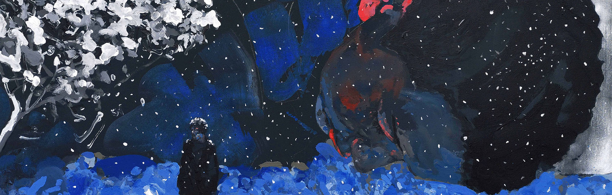

"Entre el vacío de la existencia y el placer y la alegría de la existencia. En ese filo por el que camina Cioran están las pinturas de Arrascaeta y sus personajes ensimismados, reflexivos o detenidos en la frontera que divide la vigilia y el sueño. Parecen resignados a una lucha eterna contra el vacío, que saben perdida. Buscan –como el mago un conejo en la galera– algo en magmas, en árboles, en cielos tormentosos, que también son vacío a punto de devorarlos. Una pelea contra la nada. Personas enfrentadas con una realidad más allá, buscando penetrar en ella o cerca de ser tragados por ella" (Eduardo Villar)